<html><head><title>FMT</title><style>body{font-family:sans-serif;padding:20px;background:#f4f4f9}.chapter{background:white;padding:20px;margin-bottom:30px}.q{border-bottom:1px solid #ddd;padding:15px}.correct{background:#d4edda}</style></head><body><h1>FMT</h1><div class='chapter'><h2>Firearm Injuries and Blast Injuries</h2><div class='q'><p><b>Q27:</b>              ?                      Å  Å       ? Answer Key 133 Question No. Correct Option Detailed Explanations        ? </p><div class=''>a) Å    </div><div class='correct'>b)    </div><div class=''>c) Å  </div><div class=''>d)   </div><p><i>            ,          ,         .    ...</i></p></div><div class='q'><p><b>Q28:</b>            ?         ‹    ‹         ? </p><div class='correct'>a) , ‘</div><div class=''>b) ‘, </div><div class=''>c)    , ‘</div><div class=''>d) ‘,    </div><p><i> †                                 ...</i></p></div><div class='q'><p><b>Q29:</b>            ? Answer Key Question No. Correct Option 82 Detailed Explanations      ,                           ,     ,                .           ‹? 174 Answer Key Question No. Correct Option Detailed Explanations </p><div class='correct'>a)   </div><div class=''>b)  </div><div class=''>c)     </div><div class=''>d)     </div><p><i> †         . 95 Medico Legal Autopsy             ...</i></p></div></div><div class='chapter'><h2>Organic Irritants - Plant and Animal Poisons</h2><div class='q'><p><b>Q19:</b>            Å      Å       Å ,     .                     ? Answer Key Question No. Correct Option 29 Detailed Explanations  Å               ‚      Å              Å .      ÅÅ . •     ,                 . •              ‹? 58                          ?  ç   ‡                 . ‘                    . Å        ?            ?             ,         .               ?                    ,          .        ?                   .                 -  229  -  -    Å       .  Å          Å   .   Å             Š‹„    , ç      ?  Š--      •            Å   .                       ?  ™          ˆç--   .             ?                  ?                      .            ? </p><br>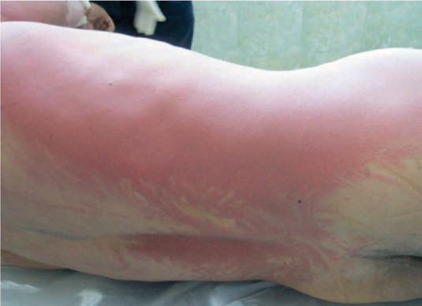<br>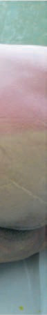<br><br><div class='correct'>a) ‰  </div><div class=''>b) †   </div><div class=''>c) ‰   </div><div class=''>d) ‚   </div><p><i>      ,                 .    ...</i></p></div><div class='q'><p><b>Q20:</b>         ‹  Å,  …Š(„) [‡ ˆ]   Å    :  †             . †              ? 79  Å          ? Answer Key Question No. Correct Option 112 Detailed Explanations  ‹       †         . …      ÅÅ                     ? 131                 .                 ? 151           ,          ?                       . Å                     ? 197    Š  ‹    „   , ç,    Š‹„             Å    Å     ?  Ž   -          ?  Š           ,              .              ?   -               ?           . 332 </p><div class='correct'>a) ’-, ê-, Š-, ”-</div><div class=''>b) ’-, ê-, Š-, ”-</div><div class=''>c) ’-, ê-, Š-, ”-</div><div class=''>d) ’-, ê-, Š-, ”-</div><p><i>  (    ‹  Å)  …Š(„) [‡ ˆ]   Å    ‡‚   . Œ Å   ...</i></p></div><div class='q'><p><b>Q21:</b>      /      Å   è ?                 ?  ‚          - -   ,            .                ?           ‰,          .              ?  Å        . .               . ’                   .      ‹ . 171  Å                    ?  ™  Å ”         „‰….  †-  -              ,        .    Å Å  ”       ?  ê                     ? 256  285            -   .              -          .              ?                ?                          .                   -  ? </p><br><br><br><div class=''>a) ‹     Ž  </div><div class=''>b)   </div><div class=''>c) ‚   </div><div class='correct'>d)      </div><p><i> Œ  Å   è        „Š…,          Š. è     ...</i></p></div><div class='q'><p><b>Q22:</b>  ”-  ‹         :              ? 80                       ?               ‰                 ?      ?                . Å             ?   Å     Å . ‹   Å              “  Ž  .  ,  Å          . ‹  Å        ? 230 Answer Key Question No. Correct Option Detailed Explanations  --           ,    ,      . Ž   Å       Š µ / ’.           ?   çç--                   -      .                       ? Answer Key Question No. Correct Option 286 Detailed Explanations                       ?                         •      ? 333 </p><br><div class=''>a) †</div><div class='correct'>b) è  </div><div class=''>c)  </div><div class=''>d) ‡ </div><p><i> Œ -  ‹          ÅÅ              ...</i></p></div><div class='q'><p><b>Q23:</b>      ‰‰    ( „††)  ? 59    ,                  ?           ?  152 ƒ ' - '       Answer Key Question No. Correct Option 153 Detailed Explanations                    ? 172                                         . Å      ?        Å   ,         ? b) c)  313                    : Answer Key Question No. Correct Option 314 Detailed Explanations        ,         . „      .               ? </p><div class=''>a) ‚    </div><div class=''>b)       </div><div class=''>c)     –</div><div class='correct'>d)       </div><p><i>  ‰‰    („†† )      - Å   Å   .  - Å   ...</i></p></div><div class='q'><p><b>Q24:</b>     –      ç Å      –      ,        Å       :        ,         .     ?  ‹        †               .                ? 132  Å               - . ƒ   ,                         .        ?  198                         .                 ?                    ?   ””--                .                     .             ? </p><br><br>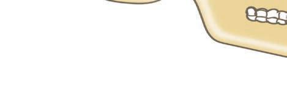<br><div class=''>a)  </div><div class='correct'>b) ‚    </div><div class=''>c) † </div><div class=''>d)    </div><p><i>    –      ç Å      –      (   ...</i></p></div><div class='q'><p><b>Q25:</b>       Å ,   '   Å       :  ”                  ?  ‹                       . …          ?  „        :  Å                      ,    ?        ,             ? 257 Answer Key Question No. Correct Option Detailed Explanations                    ? </p><div class=''>a) ‡  </div><div class=''>b)     </div><div class='correct'>c) ‡Ž</div><div class=''>d)   </div><p><i>      Å ,   '   Å        .  ...</i></p></div><div class='q'><p><b>Q26:</b>                     ? Answer Key 60 Question No. Correct Option Detailed Explanations           . ‰  ,       .        ? 81              ?  Å           .    ”     ? 173                       ,                          .       ? Answer Key Question No. Correct Option 199 Detailed Explanations                    : 334 Answer Key Question No. Correct Option 335 Detailed Explanations </p><div class=''>a) ‚              </div><div class=''>b)              </div><div class='correct'>c) ‡                        </div><div class=''>d) Šƒ           </div><p><i>          ,         . Œ “        ...</i></p></div></div><div class='chapter'><h2>CNS - Narcotics and Deliriants</h2><div class='q'><p><b>Q1:</b>                         .                       ?                 ?        ?                 /  ?     '     ?                 ?            .                    ?             ?              ?   --                   .            -           .             ?          ?                    :             ’  .        ?                 ,   ,     ?             ?                    ?                 ?                      ?                  ?              . </p>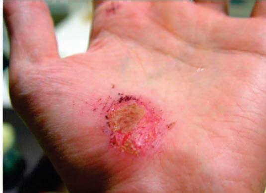<br>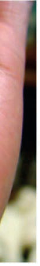<br><br><br><br><br>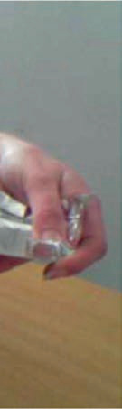<br><br><div class=''>a) -, -, -, -, -</div><div class='correct'>b) -, -, -, -, -</div><div class=''>c) -, -, -, -, -</div><div class=''>d) -, -, -, -, -</div><p><i>     ,                        . ...</i></p></div><div class='q'><p><b>Q2:</b>                   - -  ?                  ?               ?            Å      Å . ƒ              ?                 .            , :               -   ?                 ?                     ?                 :            ?             --  ,                   . Å                  ? 191   -  -        .               .         ?             .       Å       ?             ’   ?              ?   - -            , ,       .                        .                   ?                       ?                ?                ?   --              .                ?                ? </p><div class=''>a)  -     </div><div class=''>b)   -                  </div><div class='correct'>c)   -      </div><div class=''>d) Å  -      </div><p><i> Š         - -   (   )       . Š    ...</i></p></div><div class='q'><p><b>Q3:</b>                ?          Å             Å         .     Å -         .      Å         ?                ?  Å -  Å              ÅÅ .     /        ?  „             :                      ?  106          ,               ?               Å  ? 125  ƒ                ?    ' '     ,       ?                          ?  ‚ ƒ         ,               „    .      ?  ˆ              ,        Å ?                    Å  .              ?                   ?                             ?                      Å?                           ,      ,  :                         -      .               ?             ?  ‚               .     ƒ     ? 348 </p><br><div class=''>a) „ </div><div class=''>b) …†‡</div><div class='correct'>c) </div><div class=''>d)   </div><p><i> Š  ‡         . Å                  ‡  ...</i></p></div><div class='q'><p><b>Q4:</b>                    .      ? 4  „                  .               Å  ƒ   ? 24    Å         ,               Å      .             ? 42      /        ÅÅ     ? 54           ? 74                       .              ? 96                        . Å                   ?  ƒ                     . …           .                  Å        ?            …†‡        . ˆ             ‰  . … Š  ,     .‚° .             ‰     ? 146                   ? 165  Å                   ?  Å        ,                  ? 214   †-  - Å        Å         .       Å                      Å   .       ,            .    Å           ? 225              ƒ         ? 240                 Å . ‚      Å             .     ƒ„      ? 251   ˆ‰- -  ,              ,      .                 : 268                           ? 279  ‚ƒ- -               .       ,          .       ? 295                     .               ? 306                            .             ? 325                   ? </p><br>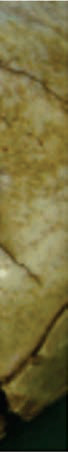<br><br><div class=''>a)             ƒ </div><div class=''>b)          </div><div class=''>c) ˆ  -          </div><div class='correct'>d) ˆ                </div><p><i> ˜                   ,             ...</i></p></div><div class='q'><p><b>Q5:</b>         '          .                 ?                   ?                       Å ?   ‹      Å     .           ?             ?  „                  .              ?  Å           ?  ‚                       ,         .        ? 126               . ‹   Œ   ‰            .                ?                ?  Å                   ? 192   ‡ˆ-  -                        ‰    .           „          ?      Å              Å      :      …'                .             ?            '        . ‹      ƒ„      ?               -                 . ƒ            ,         . ƒ                     .               ?  ‰                      .                 ?                       ?                ?           ,            .             ? 326  ‰       Š‹      .               Œ  . ˆ     ,       , ç‹- Žè, ç- êè/Œè  ,   †ˆ- êè%    .             '     ? </p><br><br>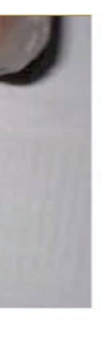<br><br><br><br><div class='correct'>a) ‰             </div><div class=''>b) Å            </div><div class=''>c) ‘          </div><div class=''>d) ‰        ’</div><p><i> ‡ – ˆ…                      …Ž. Š       ...</i></p></div><div class='q'><p><b>Q6:</b>                 ,            ‰ '                .                 ?                ?  ‡                 ?  „‰-  -     Å      Å    ‹. Œ   Å       ‹   ‹      :                       .                , :       .  Å              ?  ‰        .                 . …     ,         . ç               .           Š    ?                ?                            . Å             ?               „.                  ƒ     ?  ƒ ƒ, Å             Å   ?  ‡-            .          ?  ç         Å   †Ž‡.                   .          ?   ç‰- -  ,               ,       .                      ?  ‰        „ç--                  .                ?                          ‡?   …†--       ‡ˆ       . Å                -       . Å      . ‡   ‰    .                  ?                    ?  ‰        ,    , ,     . ˆ     ,    ,             .     ƒ     ? 349 </p><br><div class=''>a) ˆ     </div><div class='correct'>b) ˆ    </div><div class=''>c) ˆ    </div><div class=''>d) „     </div><p><i> Š      ‰ ’   . ‰ '             ...</i></p></div><div class='q'><p><b>Q7:</b>                           ‰ '   ?                 ?  Š   Å           :   „„†    ( …‰)   :                 . ‰ ,     Š   .        ?              Œ ’    ?  107 Å                    ?                   ?                         . … Š  ,                   . ƒ         ‰: 147             ? 166   ‡--             .         ˆ       . ‰     ,                .         ,   ,               . Å                  ?                Š ’ ?  ƒ        ,      :  ‚ ‰- -      Š         ƒ    . Š   ‹ , ƒ             . ‡-              .             ?                          ?                       ? 269  280                        ?  ‰Š- -                       . ‹    ,       Œ  Œ  .                 ?   †…--                      . ‡              .                ? 307               .             . „       .                ?                 ? </p><div class=''>a)  </div><div class='correct'>b) „ </div><div class=''>c)  </div><div class=''>d)  </div><p><i> Š                   ‰ '   . ‰ ’    ...</i></p></div><div class='q'><p><b>Q8:</b>                 ? 5                   Å ? 25  Š        ,                                  Å .                 ? 43         Å              ? 55    ’ ’     ? 75      ƒ ' ,         : 97                      . …                         . Å                    ?  ‹ ç - -                .                       Å. ‹   ,      127       .           ?                           ?  Å     . .                . Š-        .                  ?   ‹--            . Å                     ?  215 ‚   ƒ           ,         .                  ?   -  -   Å     ‘„Ž. ’              Å. ‹      : 226  ‚ Œç                            . Š ‹                  .  241    ‹ ?         ,           Å         Å .         Å   252           .           ?   ê- -           ,    ,      .                    .                  :                   Œ/Œ?  296                              ?   Š…--              . Å             . Ž    ,        . è        .                  ? 308                             .         ? 327  ‰               . †        ƒ   ,                ? </p><br><br><br><br><br><br><div class=''>a) Š </div><div class=''>b) “- </div><div class=''>c) ‹ </div><div class='correct'>d) „‚ </div><p><i> Å  ’          . Š       ˆ  ’        ...</i></p></div><div class='q'><p><b>Q9:</b>  Œ             ,     ç     'Žè'  .         ?  ‹                     .                ?           ,                  .      Å ?            Å  ,         Å   ‚?            .    ,            .        ?  çŽ †                      . „           .            :                        . Å                  ? 108                    ?              ?            ‹ ,           .               ? 167  193 Å                       ?   ç-  - '         . Ž            .             „       ?           “             .   Å       ”   Å  ”      Œ?  ‚ Ž- - ƒ                            .     ƒ  ,        , ,   .             .               ?  ê  -   ,          -       . ‚       .                 ?  ’                          .                ?   ‡“--               .                  .           ? 281  …      Œ               ?                 ?                         ?  ‰                             .              ƒ ? </p><br><br><div class=''>a) „ </div><div class=''>b) „  </div><div class='correct'>c) …       </div><div class=''>d)  </div><p><i> ç ç   Žè,    Ž         —      è       . ‚...</i></p></div><div class='q'><p><b>Q10:</b>            -        ?                           ?                     . è   Å           Å     .               ?          Å   Å      Å   Å   ,   ?                              :               ?  Å              ?  ‹ Å              . è    ,             . Š                     . Œ      Å                      .         ?  ƒ -         ‰ :  Å            ‹   . ç       ,     .           ?  Å                 ?       ’   ? 216   †-  - Å        Å           ”Å . ‘    ,         .   Å      ”   ?  ‚                          .           ?            . ê  ,       Å          .            ?  270 Å    ,                 :                  ?                       .         ,       . ‹        ,              .                 ?   ……--                          . Å             .         ?   Š--       .  ,                 .            ? 328              ƒ     ? 350 </p><br><br><div class=''>a) ç   </div><div class=''>b) „ </div><div class=''>c) „  </div><div class='correct'>d) …       </div><p><i> Š   -      ˆ’–…‘         …‘–……     . Š  ...</i></p></div><div class='q'><p><b>Q11:</b>                 :    Å          .              Å  Å   ?  Š   ,             Å ?       Š‰/  …„  ?               :                     ?  ç                       . ç         . Å                 ?                       Å    -    ? 128                     ? 148     -‹ ,             .           ?  Å                 ,               ? 194  Ž           ˆ-  -                      .                    ?      Å      ,             .    Å       ? 227       242                . Ž        .       è         ? 253   ”- -                        ˆ  . ƒ ,                . †     è  ‰• , èè   /,  ‚–      ‘Ž . ’          Å—.               ?  ‰                    .                    ?                   ? 297   †“--            ,  ,     . Ž    ,              . Å                  . è            .            ? 309                     . ‹,            ,          .                  ?            ƒ            ? </p><br><br><div class=''>a) ‰     </div><div class=''>b) ‹ ƒ</div><div class='correct'>c)  </div><div class=''>d)    </div><p><i>        :               ...</i></p></div><div class='q'><p><b>Q12:</b>                         ˆ‡    ? 6         Å  . 26  44              . ‘               .             Å  ’    :  Å      .               .        Å          ? 56      -    . 76         .                   ? 98 Answer Key Question No. Correct Option Detailed Explanations  109                 . Å              ?                       ?              ?  Å             . ç  ,       †‡ .         ?               .                 ,         . Å          ?  Œ                .       ,                      .                   ? 217 Answer Key Question No. Correct Option Detailed Explanations   -  -  Å Å      Å              . Ž       ,                .                    ?  ‚   Š„Š,  ƒ  ‹  :                        ?  Å       ,                   ?                ?  ‚Ž- -          ,       ‡       .          ?   ……--             . Ž       ,       .                 ?                 ? 329  ‰                      .              . ”              ? </p><br><br><br><div class=''>a)  </div><div class='correct'>b)  </div><div class=''>c) Ž </div><div class=''>d) è </div><p><i>                         ˆ‡     . Š...</i></p></div><div class='q'><p><b>Q13:</b>                            (&;…†  )?  „        ç  ‡       ? 27              ■ -    . è  Å         Å  ,         .             ?                   ?             . ‰  ,             .       –        ?  Å              ?  ‹ ê- -              †      -    . … „   /  Œ     Å       . ˆ†Š   Å         .                 ?           ‰.                ‰   ‰         ?                         ? 168                     .               . Å         ?   -  -  Å   ■           ‘„Ž. ‘ –            ,    Å         .     ?  ‚ ŒŒ- -       •               ,     .  ƒ             . ”            ?                ? 254                  ? 271                         ? 282                             .              ?   “--                   ’    . ç           --               .                   ?               . 330                 ? </p><br><br><br><br>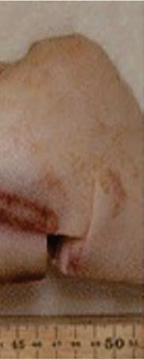<br>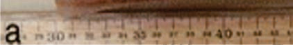<br><br><br><div class='correct'>a) ç   </div><div class=''>b) ‰ </div><div class=''>c) …       </div><div class=''>d) ‰ </div><p><i>         (&;…†  )             . Å...</i></p></div><div class='q'><p><b>Q14:</b>  Š                        :           ?          .                   ? Answer Key Question No. Correct Option 45 Detailed Explanations     Ž   Ž ,           è  ?                      ? 77                      . ç          - . Å              ? 110  ‹                     . ‡         Å        . ‹                   ? 129  ‹                  ‰  ?              .             .            ?  195 ƒ                         . Å              ?        ,         -    . ‹    /   :  ‚                    ,         .          ?  “           :                         ? Answer Key Question No. Correct Option Detailed Explanations                      ?  ‰Š- -             .     ’‰Š/ ,     -‰Š/ .        .                   ,    ,  ç-  Œ .            ?  310                     .           ?   ê‘--       ,     ,              .    ,  ‡ - ’’“ ,         .        ?  ‚            ? 351 </p>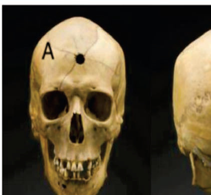<br>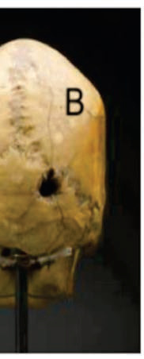<br><br><div class=''>a) • </div><div class='correct'>b) </div><div class=''>c) …†‡</div><div class=''>d) ç   </div><p><i> Š                . ç   è      . ˜  ...</i></p></div><div class='q'><p><b>Q15:</b>        :  ‹  Å         ˆ‘             .            Å ?             Å   Å          Å ?        ?        ,                    .                 ‡:         Å     ,           .                      Å          Å?   ‰                     . … Š  ,              Š   . ƒ              .              ? 149  Å             . ç  ,    †   .                   ? 169  è       :   —-  -                   Å. ‰             . ‰Å  ,    Å     -   .         ? 228  ‚                  . Š     ,  ƒ           . Š ‹ ,   ƒ   .          ? 243 Answer Key Question No. Correct Option Detailed Explanations  ‚                    ?                 ?           ,                ? 298   “…--                 .      .                 ?              . ‚           .               . ‚                         .        ?  –                     ? </p><br><br><br>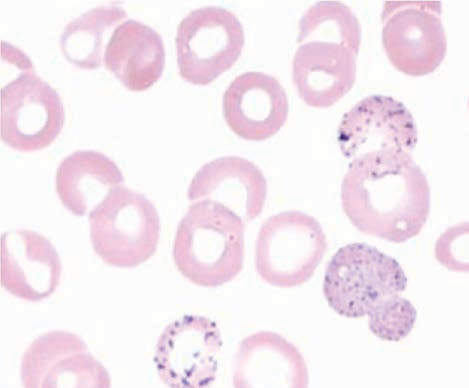<br><br><br><br><div class=''>a) †</div><div class='correct'>b) ”      </div><div class=''>c) –  </div><div class=''>d) †    </div><p><i>                      .       ...</i></p></div><div class='q'><p><b>Q16:</b>           Å“ƒ“                   . Š  ”-            .            7   ?               '  ?  57 „ -  -           ‡‘. ’       Å         ‹ „‰-„           ‹   Å  ‹.        ?                  .                 .               ?  Å       ?                   ? 130                   ?  Å                         ?                    .                        .    ,             . Å           ? 196        Å   Å  ?  ç   Å                  .                ?         - ,           ? 283  ‚è- -                          . ‹   ,                 ‡.  Å          .                    ? Answer Key Question No. Correct Option 299 Detailed Explanations  ç       : 311   êê--          .      ,           è       .           ? 331                 ? 352 </p><br><br><div class=''>a) ç  </div><div class='correct'>b) ‰ </div><div class=''>c) „ </div><div class=''>d) ‡ </div><p><i> Š    '       ˆè  . ç    ”-           ,       ...</i></p></div><div class='q'><p><b>Q17:</b>             . ç  ,           •         . ”-       ,       .               ? 8  ƒ  …   ‡ç ,        ç‘ ,        : 28   Å  Å        . ê  “ ,    Å                   .        ?                  ? 78  Å               ,        ?             Å    ?  ‹  Å‚--          ,         .           ?                 .               ?          ,                         ?         Å        ?                          ? 255                            ?              ,   ,     . Ž    ,    -      .                 . ƒ                 •-?   Š--       ‡ƒ                 .    ,            .           .           ?  ‰        Š‹        . ˆ     ,   ,     ƒ ,        .          ? </p><br><br>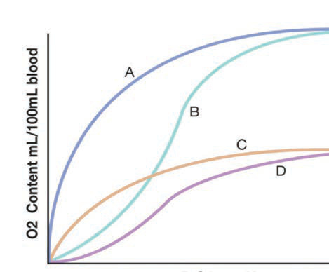<br><br><br><br><br><div class=''>a) ‰    </div><div class='correct'>b) ‡  </div><div class=''>c) ˆ    </div><div class=''>d) ˆ    </div><p><i> Š             …ˆ-……  . ƒ             ...</i></p></div><div class='q'><p><b>Q18:</b>                  ? Answer Key Question No. Correct Option 9 Detailed Explanations            Å          Å   ?   Å  Å      ‚         . ƒ            ”‘    Å . •            Å  ‹?  †  –                ?  ç                   . Å       ? 111  ‹ - -                           . …                              . ‹ Å   Å   Å Å         Å         ?  ‹            '     ? 150         ,              .                   .                   ? 170  ê                          ?   -  - Å Å Å     Å   Å      .  Å   Å            .     Š‹„  ,            Å?        •     .                   ?  è                     . è           ? 284          ,       ,       -      .               ? 312               ?  ‰ —--               .   ,                    ’.      Š‹. ‰                 : 353 Answer Key Question No. Correct Option Detailed Explanations </p><div class=''>a) Å        </div><div class=''>b)         </div><div class='correct'>c) – ’     </div><div class=''>d) ‰ ƒ         </div><p><i> Å             ,     . 22 Å     -...</i></p></div></div></body></html>